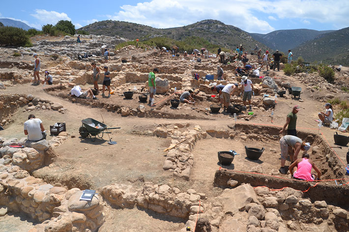

The Minoans Discovery
The Minoans were discovered by a British archeologist,Arthur Evans,
which was discovered on the Crete island.
Arthur Evans began his search in th early 1900s.
He started taking interest because of the Historical artifacts
and ancient script. He then began to call the ancient script "linear A" and "Linear B". Until today,
the term Linear A and B is still used to resemble the Minoan Civilization.
Arthur's excavation at the archeological site revealed the palace of Minos.

Palace of King Minos
The palace of king Minos was used as a center of Minoan culture during the Bronze Age.